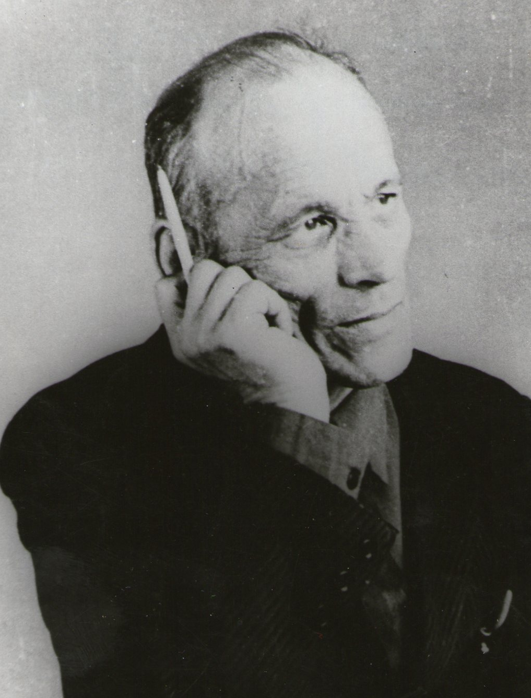

Мальцев А.А. родился 15 октября 1916 года в семье крестьянина-середняка в селе Мазунино. В 1927 году в результате болезни детского остеомиелита перенес две операции на левой ноге и проболел почти целый год, впоследствии нога была короче и он хромал. Но это было начало испытаний для него и его семьи. В 1931 году семью отца Андрея Александровича высылают на Висимо-Шайтанские рудники. Получив среднее образование, в 1937 году поступил в Пермский Государственный Педагогический Институт на географический факультет. В трудные военные годы судьба забросила Андрея Александровича в родные места. Начиная, с 1943 года работал в Юго-Осокинской семилетней школе, а позднее в средней школе учителем географии. По совместительству несколько лет трудился в вечерней школе крестьянской молодежи.
Профессия учителя требует от человека постоянного творчества и Андрей Александрович не ограничивает себя узкой учительской деятельности. Много времени он уделял оформительской работе, в средней, музыкальной школах и в других организациях с.Калинино. Как член общества «Знания» выступал с лекциями, докладами. Но - главное его увлечение-это поэзия. Начал писать стихи с 1934 года. Множество своих рукописных сборников он передал музею. Следующим увлечением было краеведение. С огромным интересом работает над изучением родного края. Андрей Александрович организовывал походы и экскурсии со школьниками. Сам составлял карты маршрутов всех путешествий. Большой труд А.А. Мальцева - географические карты села Калинино (Юго-Осокино) и Калининского района. Вместе с Евгением Михайловичем Курочкиным работал над летописью с. Калинино. Он оставил достойное поэтическое и краеведческое наследие. Его труды вошли в основу музейного фонда нашего села.